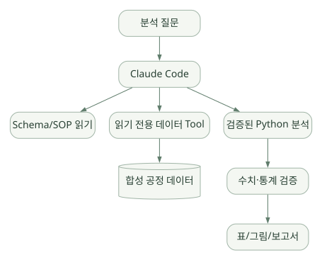
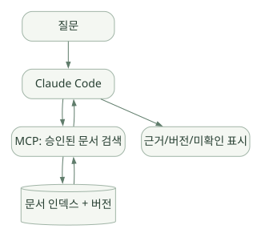
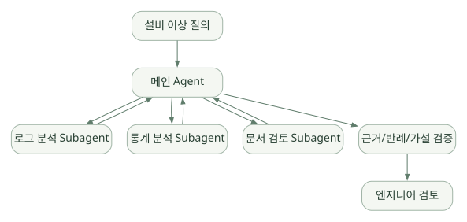

적용과 판단 / 단원 09
탐색 도구에서 검증 가능한 분석으로
합성 데이터 EDA·문서 검색·원인 후보 분석의 조건
먼저 연결해 보기
원문은 공정 데이터 EDA, 전문 문서 검색과 설비 원인 후보 분석을 가상 사례로 제시합니다. 모델은 조사와 설명을 돕고, 수치·단위·표본·근거와 실제 권한은 검증 가능한 도구와 정책으로 관리해야 합니다.
파일·명령·MCP를 직접 활용하는 편의성과, 다중 사용자 서비스의 상태·인증·복구를 운영하는 적합성은 별도로 판단하세요. 같은 데이터·도구·모델·정책과 예산으로 다른 Harness·SDK와 비교할 질문을 정리합니다.
읽는 관점기본 제공 기능과 직접 개발·검증할 도메인 계층을 나누고, 상관관계를 원인으로 확정하지 마세요.
20. 반도체 도메인 Agent 적용 설계#
20.1 목적: Claude Code로 무엇을 실험할까?#
현재 단계의 목표는 곧바로 생산 시스템에 Agent를 연결하는 것이 아니라, 어떤 Harness 기능과 추가 구성요소가 필요한지 판단할 수 있도록 구조를 이해하는 것이다.
다음 세 가지 예제를 기준 사례로 삼는다.
사례 A — 공정 데이터 EDA Agent#
넓은 도식은 가로로 이동하며 읽을 수 있습니다. 도식 크게 보기 ↗

원문에 수록된 학습용 도식입니다. 노드·화살표·분기 라벨을 보존해 다시 배치했습니다. 세부 조건과 예시·구현의 구분은 앞뒤 본문을 함께 읽으세요.
도식 원문 보기 (Mermaid)
flowchart TD
U[분석 질문] --> CC[Claude Code]
CC --> M1[Schema/SOP 읽기]
CC --> M2[읽기 전용 데이터 Tool]
M2 --> DB[(합성 공정 데이터)]
CC --> PY[검증된 Python 분석]
PY --> V[수치·통계 검증]
V --> O[표/그림/보고서]과업 예시
- 단위·컬럼 정의 확인.
- 결측·중복·이상치 분포 파악.
- 공정 변수와 수율의 상관 분석.
- 시계열 경향 및 설비군별 분포.
- 결과를 이해하기 쉬운 표·그래프로 제시.
필수 검증
- LOT·wafer·chip 수준 혼동 금지.
- 수율 분모 정의 명시.
- 이상치 제거 기준 명시.
- 테스트/검증 데이터 누수 방지.
- 관계와 인과를 구분.
사례 B — 반도체 전문 문서 지식 Agent#
넓은 도식은 가로로 이동하며 읽을 수 있습니다. 도식 크게 보기 ↗

원문에 수록된 학습용 도식입니다. 노드·화살표·분기 라벨을 보존해 다시 배치했습니다. 세부 조건과 예시·구현의 구분은 앞뒤 본문을 함께 읽으세요.
도식 원문 보기 (Mermaid)
flowchart LR
U[질문] --> C[Claude Code]
C --> R[MCP: 승인된 문서 검색]
R --> IDX[(문서 인덱스 + 버전)]
IDX --> R
R --> C
C --> P[근거/버전/미확인 표시]과업 예시: DRAM·NAND 공정 개념 설명, 공정 단계별 품질 규칙, 기술 문서의 변경점 정리.
설계 핵심: RAG의 검색 품질·문서 ACL·근거 연결·개정 일자를 중요하게 본다. 기본 Auto Memory를 전문 지식 DB로 대체할 수 없다.
사례 C — 설비 이상 원인 후보 분석 Agent#
넓은 도식은 가로로 이동하며 읽을 수 있습니다. 도식 크게 보기 ↗

원문에 수록된 학습용 도식입니다. 노드·화살표·분기 라벨을 보존해 다시 배치했습니다. 세부 조건과 예시·구현의 구분은 앞뒤 본문을 함께 읽으세요.
도식 원문 보기 (Mermaid)
flowchart TB
U[설비 이상 질의] --> MAIN[메인 Agent]
MAIN --> L[로그 분석 Subagent]
MAIN --> S[통계 분석 Subagent]
MAIN --> D[문서 검토 Subagent]
L --> MAIN
S --> MAIN
D --> MAIN
MAIN --> CHECK[근거/반례/가설 검증]
CHECK --> HUMAN[엔지니어 검토]주의: 이 구조가 복잡하다고 해서 반드시 Multi-Agent여야 하는 것은 아니다. 초기에는 단일 Agent와 여러 전문 Tool로 동일 문제를 해결해 보고, Subagent 분리가 정확도·속도·Context 절약에 실제 이점이 있는지 평가한다.
20.2 공정 데이터 Agent를 위해 직접 만들어야 할 요소#
| 요소 | Claude Code가 제공하는 기초 | 별도 개발·검증 필요 |
|---|---|---|
| 자연어 목표 해석 | 모델 기반 Agent 동작 | 반도체 용어·업무 분류·정책 |
| 데이터 접근 | 파일 도구·MCP 연결 가능 | 정형 Tool·DB ACL·쿼리 제한 |
| 분석 실행 | Bash/코드 실행 능력 | 표준 산식·통계 검증·테스트 |
| 도메인 지식 | CLAUDE.md, Skills, RAG 연결 | 최신 SOP·정확한 버전·인용 |
| Memory | Session/Auto Memory | 장기 지식 인덱스·폐기·공유 정책 |
| 보안 | Permissions, Hooks, Sandbox | 망·계정·비밀관리·외부 전송 통제 |
| UI/서비스 | CLI/IDE 중심 사용 경험 | 사용자별 웹 서비스는 별도 설계 필요 |
| 운영 | 실행 로그·텔레메트리 가능 | 평가 데이터셋·품질 게이트·감사 체계 |
20.3 어떤 데이터부터 시작할까?#
- 공개 반도체 수율·공정 관련 학습 데이터 또는 직접 생성한 합성 데이터.
- 소량으로 계산 결과를 사람이 검산할 수 있는 테이블.
- 시간대·단위·결측·중복 등 일부 오류가 의도적으로 들어간 데이터.
- 설비·공정 설명은 특정 회사의 실사용 레시피가 아닌 공개 개념 지식.
개발 초기에는 실제 영업기밀을 다루는 데이터보다 시뮬레이션 데이터에서 프레임워크의 동작 원리를 먼저 검증한다.
20.4 Claude Code를 선택하는 게 유리한 경우#
- 개발 환경에서 바로 탐색·스크립트 실행·수정·테스트를 반복하고 싶다.
- 작업을 파일/명령/MCP 도구의 실행 단위로 표현할 수 있다.
- 별도 웹서비스 개발보다 Agent 작업 흐름의 가설 검증이 우선이다.
- Skills·Hooks·Subagents를 빠르게 구성하고 시험하고 싶다.
- 개발자가 직접 결과를 보며 승인·교정할 수 있다.
20.5 Claude Code만으로 부족할 수 있는 경우#
- 대규모 사용자별 서비스 API와 세밀한 멀티테넌시가 핵심이다.
- 모델 제공자 독립성과 자체 호스팅 모델 지원이 최우선이다.
- 워크플로의 모든 상태 전이가 형식적으로 고정돼야 한다.
- Agent Loop 엔진의 코드를 직접 수정해야 한다.
- 생산 데이터 망 분리·지속 감사·기업 배포 정책이 까다롭다.
- 정확한 수치 처리·장기 작업 상태 복구가 매우 중요한데 별도의 검증·저장 계층을 만들 수 없다.
이 경우에도 Claude Code는 개발·프로토타이핑 도구로 유용할 수 있다. 단, 프로토타이핑 편의성 = 서비스 런타임 적합성은 아니다.
21. 장단점·한계·프레임워크 비교#
21.1 Claude Code의 장점#
| 장점 | 이유 | 반도체 적용 관점 |
|---|---|---|
| 완성된 Agent 실행 경험 | 모델-도구-관찰 루프를 즉시 활용 | 빠른 데이터 분석 PoC |
| 개발 작업에 강함 | 파일 탐색·코드 편집·테스트·Git | 분석 코드 작성/검증 |
| 확장 지점 다양 | Skills·Hooks·MCP·Plugins·Subagents | 사내 검색/도구 연결 |
| 프로젝트 맥락 유지 | 지시 파일·세션·Auto Memory | 동일 프로젝트 반복 학습 |
| 사용자의 개입 가능 | 권한·승인·중단·계획 | 연구용 Human-in-the-loop |
| CLI/SDK 연계 | 수동 사용부터 자동화까지 | 단계별 연구 범위 확대 |
21.2 Claude Code의 단점 및 제약#
| 제약 | 설명 | 보완 방안 |
|---|---|---|
| 본체 내부 구현 비공개 | Agent Loop 상세 함수·자료구조 직접 분석 어려움 | 공식 동작·외부 관찰·SDK 경계 조사 |
| Claude/연동 환경 의존성 | API·모델·계정·공급자·버전 제약 | Gateway 호환성 검증·대안 프레임워크 비교 |
| 비결정적 실행 | 같은 작업도 도구 경로가 변할 수 있음 | 검증된 Tool·고정 데이터·테스트 |
| 도구 실행 공격면 | Shell·네트워크·확장 도구 사용 | Sandbox·ACL·Hook·승인·로그 |
| 자동 메모리의 한계 | 파일 메모리는 전문 지식 RAG와 다름 | 별도 승인 지식 검색 서버 |
| 복잡한 Multi-Agent 비용 | 병렬 세션·결과 통합 비용 | 단일 Agent 기준선과 비교 |
| 서비스 통합 추가 개발 | 사용자별 상태·API·운영은 별도 문제 | Agent SDK 또는 다른 SDK 비교 |
21.3 여섯 학습 대상 및 Claude Code의 관점 차이#
| 대상 | 중심 관점 | 특히 비교할 영역 |
|---|---|---|
| Hermes Agent | 완성형 자율 Agent Harness | 루프 소스 공개성, 메모리·도구·운영 |
| PydanticAI | Python 기반 Agent 개발 | 타입·스키마·재시도·출력 검증 |
| OpenAI Agents SDK | 경량 Agent 개발 SDK | Runner·Handoff·Guardrails·Tracing |
| Google ADK | 에이전트·이벤트·워크플로 | Runner/Event/Session·Multi-Agent |
| Microsoft Agent Framework | 기업 Agent + Workflow | Middleware·상태·장기 실행 |
| Claude Agent SDK | Claude Code Harness 임베딩 | SDK 호출·Transport·권한·호스팅 |
| Claude Code | 바로 사용 가능한 Agent Harness | 실제 개발 작업의 자율 실행·지시·도구·보안 |
이 표는 기능별 절대 우열이 아니다. 같은 업무 데이터셋에 각 기술을 적용해 실험하기 전에는 “가장 정확하다”, “가장 안전하다” 등의 결론을 내리지 않는다.
21.4 의사결정 질문 12개#
- 요구 대상은 CLI 연구자 한 명인가, 여러 사용자가 접속하는 웹서비스인가?
- 실제 모델 공급자를 자유롭게 교체해야 하는가?
- 프레임워크 내부 루프를 수정할 필요가 있는가?
- 여러 단계의 순차·병렬 흐름을 얼마나 결정적으로 관리해야 하는가?
- 도메인 데이터는 내부망에만 존재하는가?
- 외부 모델 전송이 허용되는 데이터의 범위는 어디까지인가?
- Tool은 조회 전용인가, 수정·배포도 포함하는가?
- 승인·일시정지·재개·장애 복구가 필요한가?
- 메모리 지식의 출처와 갱신 정책이 필요한가?
- 결과 정확성을 어떤 검증 코드로 보장할 수 있는가?
- 추적 가능한 실험·데이터 버전·비용 기록이 가능한가?
- 운영팀이 관리할 수 있는 보안·라이선스·업데이트 체계가 있는가?